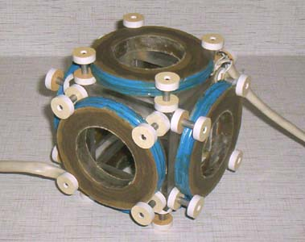
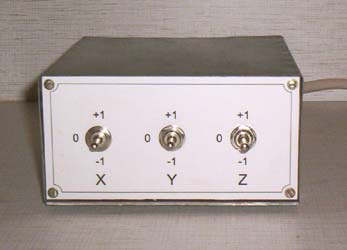
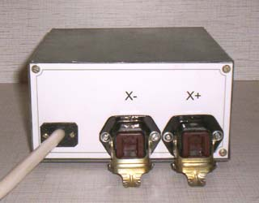

Трехкомпонентная система
взаимноортогональных пар соосных катушек для
генерации постоянного или переменного магнитного поля произвольной ориентации

Введение
Для генерации однородного магнитного поля заданной ориентации
используются катушки Гельмгольца [10], представляющие из себя пару соосно
расположенных на определенном расстоянии друг от друга цилиндрических
соленоидов, высота которых существенно меньше их диаметра. Использование трех
одинаковых пар соосных катушек, ориентированных взаимно перпендикулярно,
позволяет построить систему, направление магнитного поля в центре которой можно
произвольно изменять, а величину магнитной индукции регулировать от нуля до
некоторого значения, задавая величину и направление тока в каждой из пар
последовательно включенных катушек.
Конструкция
Шесть одинаковых цилиндрических соленоидов с отверстиями для
доступа в центр системы укреплены с помощью немагнитных втулок на гранях
немагнитного токонепроводящего каркаса кубической формы. Для каждого соленоида
имеется возможность независимой центровки. Выводы от трех соленоидов,
находящихся на соседних гранях, сгруппированы в кабель с разъемом. При
подключении к источникам питания обычно применяется последовательное включение
соленоидов, расположенных на противоположных гранях, хотя, вообще говоря,
конструкция допускает многообразные схемы подключения.
Назначение
- Генерация постоянных и переменных низкочастотных
магнитных полей внутри системы с возможностью произвольного изменения
направления и величины индукции
- Калибровка датчиков магнитометров [9]
- Магнитные измерения
- Построение активных магнитостатических экранов
- Использование в качестве всенаправленной антенны для
детектирования [6] или генерации внешних по отношению к системе переменных
низкочастотных магнитных полей
Технические данные:
- коэффициент преобразования для каждой пары катушек 2.1
мТл/А в центре системы
- сопротивление отдельного соленоида около 5 Ом
- индуктивность отдельного соленоида около 17 мГн
- максимальный непрерывный ток через отдельную обмотку 1 А
- максимальный ток через отдельную обмотку при
повторно-кратковременном режиме работы до 5 А (температура обмоток не должна
превышать 60 0C)
- диаметр проходных отверстий 60 мм
- расстояние между центрами соосных катушек 125 мм
- габаритные размеры системы не более 150 х 150 х 150 мм3
- масса системы не более 3 кг
Для питания системы могут применяться различные блоки питания
[2, 7, 8], генераторы мощных импульсов тока [3 - 5]. Для получения переменных
магнитных полей может быть использован звуковой генератор, например, Г3-118 с
усилителем [11]. С помощью специального устройства (рис. 1) можно изменять
направление вектора магнитной индукции в центре системы при питании ее от одного
источника.


Рис. 1. Устройство для изменения направления вектора магнитной
индукции в трехкомпонентной системе катушек (вид спереди и сзади, размеры 160 х
90 х 170 мм3).
Расчет катушек системы для работы на постоянном и переменном
токе выполнен с помощью программы H_Coils [1].
Ссылки:
- H_Coils: Программа
для расчета параметров и магнитного поля системы колец Гельмгольца
- Блок питания электромагнита
регулируемый
- Генератор мощных
импульсов тока биполярный
- Генератор мощных
импульсов тока однополярный
- Генератор мощных импульсов
тока (емкостной накопитель энергии)
- Измерение индукции
переменного магнитного поля с помощью измерительной катушки
- Импульсный
регулируемый блок питания 0 ... -50 В с максимальным выходным током до 20 А
и двухканальным внешним управлением
- Источник питания
повышенной мощности напряжением 12.6 В (замена аккумуляторной батареи)
- Приборы для
измерения магнитных полей
- Системы колец
Гельмгольца (катушки Гельмгольца)
- Усилитель
мощности низкой частоты для генератора сигналов Г3-118
Словарь
терминов:
- Катушки Гельмгольца
- система из двух одинаковых последовательно включенных цилиндрических
соленоидов, расположенных соосно, причем расстояние между центрами
соленоидов приблизительно равно их среднему радиусу. В центре системы
имеется зона однородного магнитного поля.
- Магнитная индукция - вектор, численно
равный пределу отношения силы, действующей со стороны магнитного поля на
элемент проводника с электрическим током, к произведению тока и длины
элемента проводника, если длина этого элемента стремится к нулю, а элемент
так расположен в поле, что этот предел имеет наибольшее значение, и
направленный перпендикулярно к направлению элемента проводника и к
направлению силы, действующей на этот элемент со стороны магнитного поля,
причем из его конца вращение по кратчайшему расстоянию от направления силы к
направлению тока в элементе проводника должно быть видно происходящим против
часовой стрелки.
- Однородное магнитное поле - магнитное
поле, в каждой точке которого вектор магнитной индукции имеет одни и те же
направление и величину.
- Последовательное включение соленоидов -
электрически последовательное включение соленоидов, приводящее к увеличению
суммарного магнитного потока.
- Цилиндрический соленоид - соленоид в виде цилиндра
с центральным цилиндрическим отверстием (если таковое имеется).
16.12.2008
12.01.2009
Альтернативные источники
энергии
Компьютеры и
Интернет
Магнитные поля
Механотронные системы
Перспективные
разработки
Электроника и
технология
Главная страница